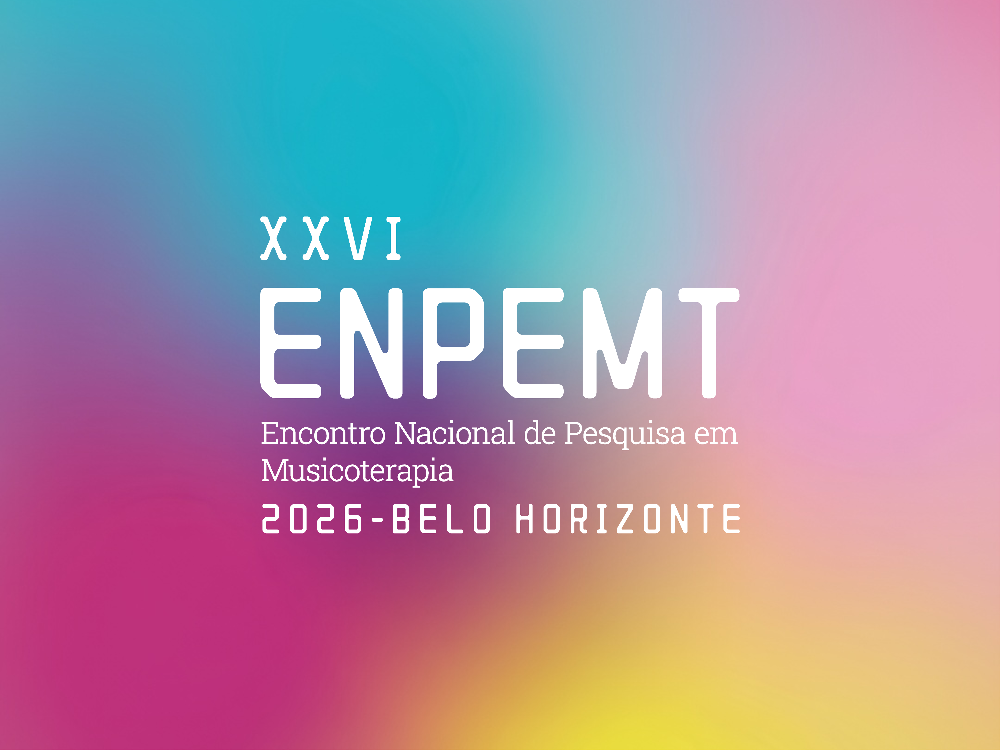
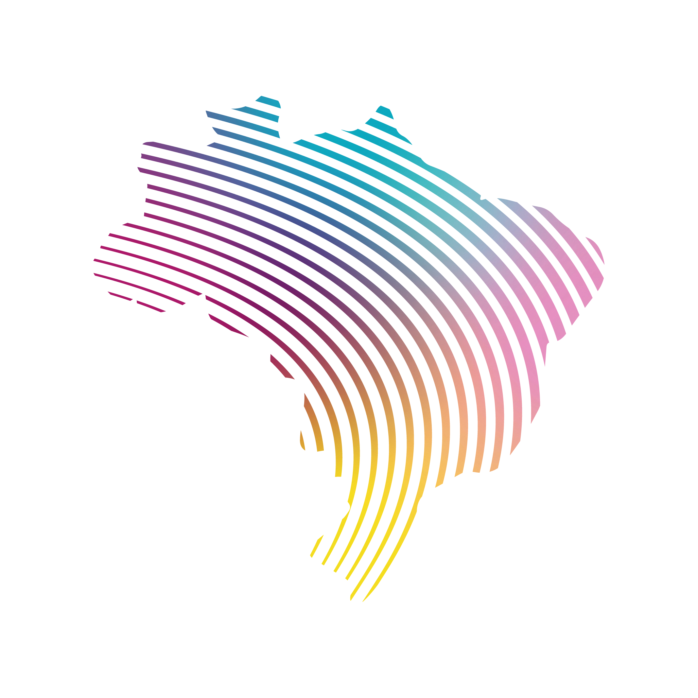
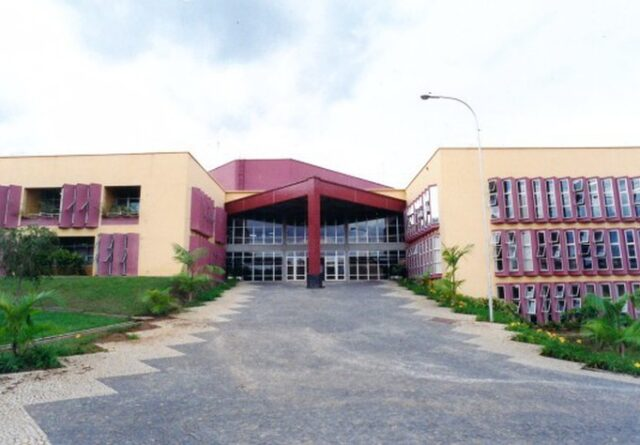
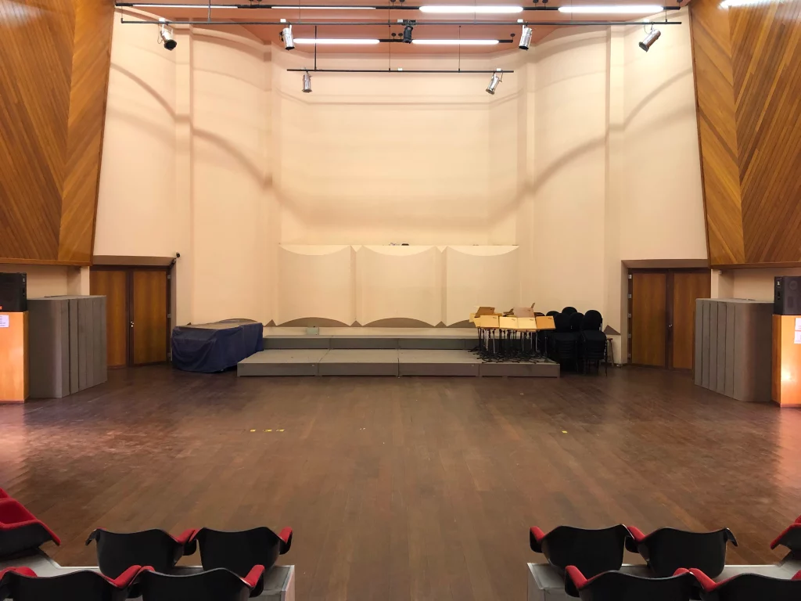
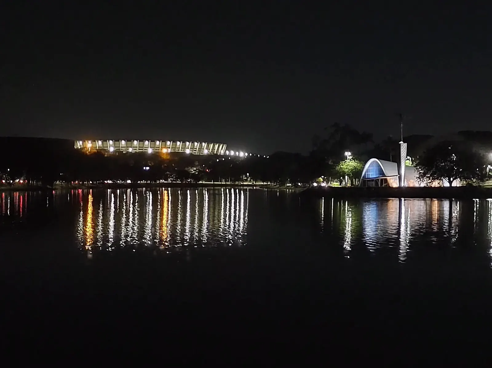
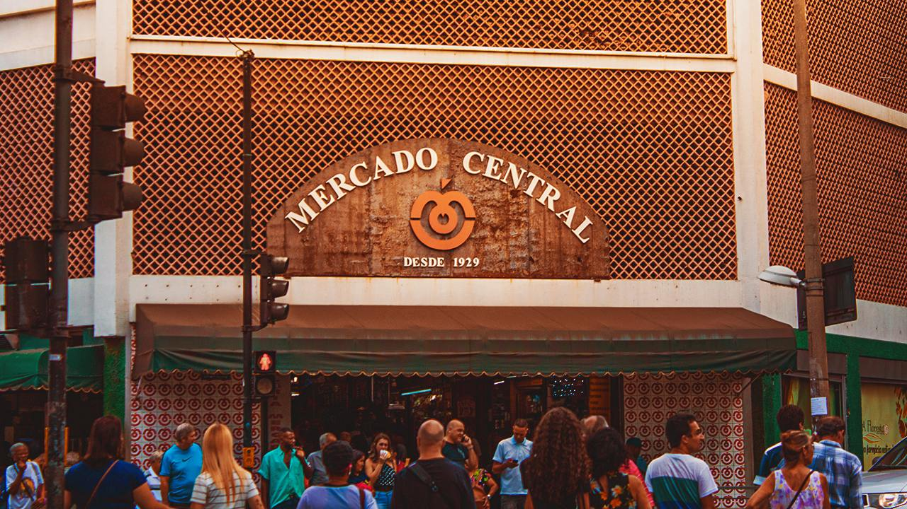
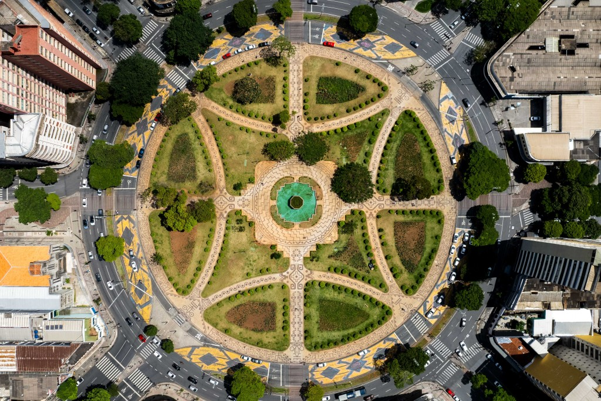
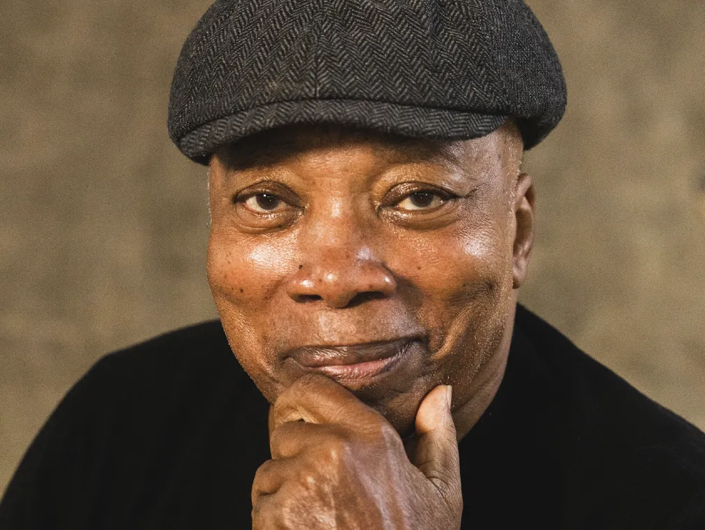
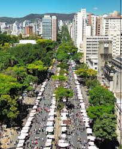

Após anos de encontros virtuais impostos pela pandemia, o ENPEMT retorna à sua essência: o encontro humano, o abraço, a escuta compartilhada. A 26ª edição acontece em Belo Horizonte, na histórica Escola de Música da UFMG.
Três dias de pesquisa, arte, conexão e celebração da musicoterapia brasileira. Venha fazer parte deste momento histórico!
Uma data especial: véspera do feriado nacional de 12 de outubro, permitindo que participantes de todo o Brasil aproveitem o fim de semana prolongado em BH.

O XXVI ENPEMT recebe propostas em diferentes modalidades. Clique na modalidade desejada para acessar o formulário de submissão no Google Forms.
Três dias de imersão em pesquisa, prática clínica e vivência musical. Programação sujeita a atualizações.
Fundada em 1925, a Escola de Música da UFMG é uma das mais tradicionais do país. Localizada no Campus Pampulha — projeto urbanístico Patrimônio Mundial da UNESCO — a escola reúne salas de concerto, estúdios de gravação e espaços de pesquisa de excelência.
O campus da UFMG foi projetado por Oscar Niemeyer com paisagismo de Burle Marx, em uma das mais belas realizações da arquitetura modernista brasileira.


📍 Escola de Música da UFMG · Av. Pres. Antônio Carlos, 6627 · Pampulha · BH/MG · 31270-010
Pegue o ônibus MOVE até a estação Pampulha (Linhas 51, 52, 5106, 5550, etc) ou tome um ônibus do Centro/Savassi em direção à UFMG (Linha 5250, etc).
Após entrar no campus pela entrada da Av. Antônio Carlos, siga as placas. Após o primeiro prédio (Belas Artes), vire a direita, e a próxima à esquerda.
Principal aeroporto de BH, com voos para todo o Brasil e rotas internacionais.
A Rodoviária de Belo Horizonte está no centro da cidade
R$ 6,25 de ônibusDo centro, pegue o ônibus linha UFMG ou use aplicativo de transporte (Uber/99) — ~20 min.
Chegou!Pelo Anel Rodoviário (MG-30), acesse a saída Pampulha/UFMG. Siga pela Av. Antônio Carlos até o portão da UFMG.
GPS: Escola de Música UFMGOs aplicativos de corrida, como Uber e 99 funcionam bem, além dos taxis tradicionais.<
GPS: Escola de Música UFMGDicas práticas por dia do evento — desde os restaurantes universitários do campus até opções abertas no sábado.
Na quinta (dia 1) e sexta (dia 2), os restaurantes do campus estão em pleno funcionamento.
A capital mineira é vibrante, acolhedora e repleta de arte, cultura e gastronomia. Chegando antes do feriado, vale explorar tudo que BH tem a oferecer!

🏪
🏪


🏪Sugestões de hotéis próximos ao campus da UFMG ou bem conectados por transporte. BH tem ótimas opções para todos os orçamentos!
💡 Dica: O evento acontece nos dias 8–10/out, véspera do feriado de 12/10. Reserve com antecedência pois o período é muito procurado em BH! O organizador pode negociar tarifas coletivas com hotéis próximos — aguarde comunicado da comissão organizadora.
Garanta sua vaga no maior encontro de pesquisa em musicoterapia do Brasil. Clique na categoria que melhor se aplica a você para acessar o formulário de inscrição:
Clique na sua categoria acima e preencha o formulário de inscrição com seus dados
Realize o pagamento via PIX e envie o comprovante diretamente no formulário
Aguarde a confirmação da inscrição por e-mail
📧 Dúvidas? Entrar em contato via e-mail